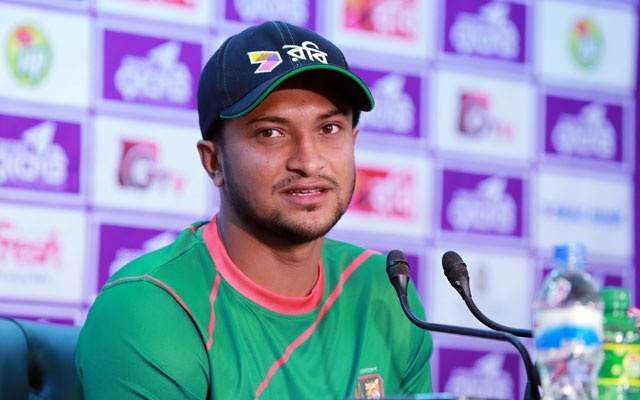

Shakib Al Hassan
(Crickter of Bangladesh)
Biography of Shakib Al Hassan
Shakib Al Hasan (born 24 March 1987) is a Bangladeshi international cricket player, former ODI captain and current captain in Twenty20 International (appointed in April 2017) and Tests. (appointed on 10th December 2017). ... Born in Magura, Khulna, Shakib started playing cricket at an early age.
Shakib's record as captain
| Name of matches |
Matches |
Won |
Lost |
Drawn |
| Tests |
9 |
1 |
8 |
0 |
| ODI |
49 |
23 |
26 |
- |
| T20 |
4 |
0 |
4 |
- |
Personal information
- Full name:Shakib Al Hasan
- Born :24 March 1987 (age 30)
- Nickname :Miracle of Magura, Moina
- Height :1.76 m (5 ft 9 in)
- Batting :Left-handed
- Bowling :Left-arm orthodox spin
- Role :All-rounder, T20I Captain Test Captain
International information
- National Site:Bangladesh(2006 to present)
- Test debut: (cap 46) 18 May 2007 v India
- Last Test: 27 August 2017 v Australia
- ODI debut: (cap 82) 6 August 2006 v Zimbabwe
- Last ODI: 22 October 2017 v South Africa
- ODI shirt no: 75
- T20I debut (cap 11): 28 November 2006 v Zimbabwe
- Last T20I: 29 October 2017 v South Africa
- Disciplinary issues
- In October 2010, Shakib was on 92 in the fourth ODI against New Zealand, when there was movement near the sightscreen, which the umpires failed to stop.[179] After a few minutes Shakib, Bangladesh captain at the time, ran towards the sightscreen, hurled abuse and threatened to hit the offender with his bat.[179] He was later warned by the match referee.[179]
In March 2011, during the world cup match against West Indies, several people in the Sher-e-Bangla National Cricket Stadium grandstand complained Shakib had reacted too strongly when he was booed.[179] The offending picture was spread over the internet and published in several newspapers. Within days of that incident, Shakib blasted former national cricketers in his Prothom Alo column.[179]
In February 2014, Shakib was fined BDT 300,000 and was handed with a three-ODI ban, because he had made an indecent gesture towards his crotch in the dressing room live on broadcast, during the second ODI against Sri Lanka.[180] Shakib later made a public apology statement through his official Facebook page.[181]
- Records and achievements
-
First and only cricketer in history to be ranked the No.1 all-rounder by ICC in its Player Rankings in all three formats of the game.
Highest individual score by a Bangladeshi batsman in Tests.
Best partnership record for any wicket for a Bangladeshi pair in ODIs, with Mahmadullah.(224)[189] this record partnership is also the highest ever 5th wicket runs stand in the history of ICC Champions Trophy[190]
He holds the record for taking the most number of wickets in T20 cricket on a single ground(76 at Shere Bangla National Stadium, Mirpur, Dhaka)[191]
Fourth bowler in Test cricket history to pick up a 5-wickets haul against all Test playing nations following Dale Steyn, Muttiah Muralitharan, and Rangana Herath.[192]
One of only three players in history to score a century and take ten wickets in a Test match.
One of only five players in history with 5000 runs and 250 wickets in ODIs.
Shakib_Al_Hasan
Facebook page of Shakib_Al_Hasan